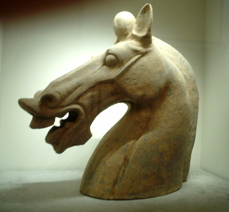
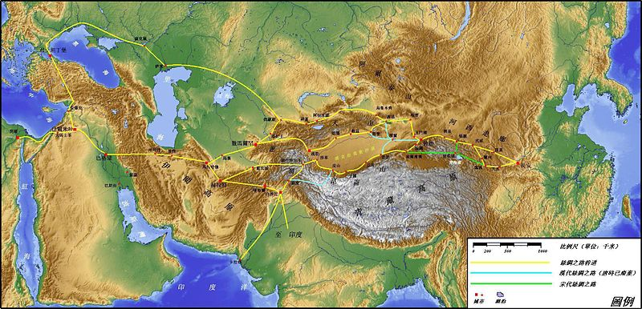
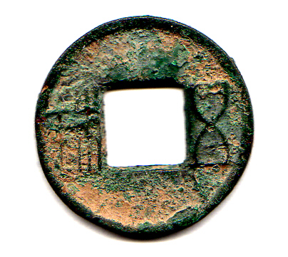
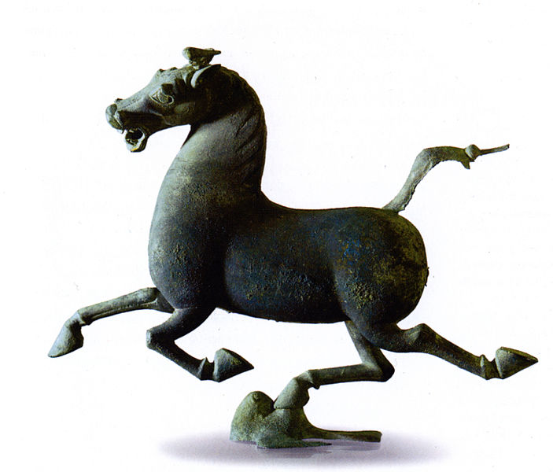

汉朝（前202—公元220年），分为西汉和东汉，是继秦朝之后强盛的大一统帝国。前202年高祖刘邦建国，定都长安。文景之治后，汉武帝刘彻进一步推动大一统事业，在“昭宣中兴”时达到极盛。 公元九年，王莽篡夺政权，西汉结束。25年，皇族刘秀称帝，建立东汉，定都洛阳。开创了光武中兴和明章之治，万国来朝。汉朝时期，民族融合空前发展，对外交流频繁，国力和经济较为强盛。且文化的统一，为中华民族两千年的社会发展奠定了基础，为中华文明的延续和挺立千秋做出了巨大贡献。汉朝共历400多年。220年禅位于魏王曹丕，东汉结束。
汉朝是刘邦建立的中国第二个大一统王朝，分为西汉(前202年[1]－公元9年)、东汉(25年－220年)。汉高祖建立西汉，定都长安，又称前汉；汉光武帝建立东汉，定都洛阳，又称后汉，西汉与东汉合称两汉。
汉高祖刘邦至汉景帝刘启时期的汉朝，经济实力缓慢上升，成为世界第一大帝国[5]，至汉武帝时期，大汉王朝已经成为世界上最强大的王朝[2]，霍去病越千里大漠大败匈奴，封狼居胥而还，最远达到今天的俄罗斯贝加尔湖附近，匈奴帝国战败而向西狼狈逃遁。中亚和西域各大国也都闻而惧之。张骞出西域首次开辟了著名的“丝绸之路”[3]，降服中亚大国大宛，西域臣服，开拓了“北绝大漠、西逾葱岭、东越朝鲜、南至大海”的广袤国土，奠定了今日中华的版图[6]。汉宣帝时期，郑吉迫使匈奴逐日王降汉，大破车世国，驱逐匈奴在西域势力，设置西域都府，使得西域正式纳入中国版图，南匈奴降汉，北匈奴单于被陈汤斩杀于康居，发出“明犯强汉者，虽远必诛！”的时代强音,解决了匈奴问题。到了东汉时期，在大将窦宪的打击下，迫使北匈奴西逃至欧洲。基本彻底解决了困扰汉朝的匈奴边境问题。之后东汉明帝遣班超出使西域，打通荒废已久的丝绸之路。
两汉王朝有“文景之治”“汉武盛世”“昭宣中兴”“光武中兴”“明章之治”。两汉时期开疆拓土，国力强盛，人口众多，西汉全盛时达到六千万人口，这是汉朝人口最鼎盛的时期[7]，之后连年战乱，到了西汉末年东汉初年，人口骤降，经过东汉一朝的逐渐恢复，东汉后期人口增至五千六百万，基本达到了西汉时期的水平。两汉时期的人口数量直到宋英宗时期才再次超过。
两汉时期民族融合空前发展，文化科学异常活跃，对外交流意义重大。汉朝进一步奠定了汉民族的民族文化，西汉所尊崇的儒家文化成为当时和日后的中原王朝以及东亚地区的社会主流文化。到现在，“汉人”[2]仍为多数中国人的自称，而华夏族逐渐被称为“汉族”，华夏文字亦被定名为“汉字”[3]，汉武帝废黜百家独尊儒术，儒学成为中国几千年的统治思想，并且最早开始在京师长安设太学，并且开始儒学中的经学，东汉光武帝时期太学生一度多达三万。汉明帝时期，佛教东渡首次来到中国，[8]在洛阳营建的第一座佛教寺庙洛阳白马寺，我国第一部汉译佛教经典是在白马寺译出的四十二章经，张道陵创立道教也是影响中国的大事。
汉武帝时张骞出使西域，首次开辟丝绸之路，使中国和中亚、西亚各国的经济文化交流日益频繁。[9]张骞曾经到达大宛(锡尔河上游东面)、大月氏(阿姆河中部)[10]、康居(锡尔河下游及其以北)[10]等国。张骞的副使还到达过大夏(阿富汗)[10]、安息(伊朗)[10]等国。以后汉武帝的使者还到达奄蔡(黑海以北)、条支(叙利亚)[10]，武帝时期汉朝使节最远越过罗马帝国，到达犁轩(罗马帝国附属国，今天的埃及亚历山大城)，这是汉朝到达的最远国家，直接和欧洲非洲进行了联通。中亚、西亚等国也派遣使者到西汉访问和通商。公元73年，汉明帝派班超出使西域，他帮助西域各国摆脱了匈奴的控制，被东汉任命为西域都护，他在西域经营30年，加强了西域与内地的联系。班超曾派甘英出使大秦(罗马)，甘英到达波斯湾。166年，大秦使臣来到洛阳，这是欧洲国家同中国的首次直接交往。汉光武帝时期，日本国使臣首次来中国，汉光武皇帝册封日本汉倭奴国金印，汉明帝永平年间，蔡伦改进了造纸术，成为中国四大发明之一，张衡发明了地动仪浑天仪等。
西汉是中华民族发展史上的一个重要时期，中华各民族的核心汉族就是在这一时期更名的。自秦始皇统一中国后，原战国时各国的文化便相互渗透融合，到西汉时中华地区在典章制度、语言文字、文化教育、风俗习惯多方面都逐渐趋于统一，构成了共同的汉文化。汉族和周边各少数族都是汉代中国多民族国家的成员。汉族由于文明程度较高，在中国各兄弟民族中一直处于主导地位，这是历史发展和自然形成的结果。汉以后历代的朝代名称虽有变换，但汉族作为中国主体民族的地位始终未变。
刘邦小时候也读过一些书，但他绝非本分的读书人。 汉朝前期形式图[12] 他平时很少参加家庭农业生产，其父曾为此多次责备他是个“无赖”。到青年时代，秦始皇已统一中国，他通过考试当上了秦朝的泗水亭长，并与郡县小吏关系非常密切，但他这时也成了一个酒色之徒。
秦朝灭亡以后，项羽和汉高祖刘邦展开了长达四年的楚汉之争。汉高祖刘邦在手下萧何、韩信、张良等人的辅助下，在垓下之战打败了西楚霸王项羽，公元前206年，项羽封刘邦为汉王，于公元前202年正式称皇帝，仍用“汉”号，有纪念意义[13]，汉朝就此开始。(补注：秦朝灭亡之后，确切地说，应该是西楚王朝。西楚，是介于秦朝和汉朝之间的一个历史朝代，建立者是西楚霸王项羽，存在时间为：公元前206年四月--公元前202年十二月。而过去史学界计算西汉年数的方法[自公元前207年12月刘邦灭掉秦国算起，并以农历汉高祖元年十月为汉太祖元年的首月]是不正确的)。
汉太祖刘邦登基后，采用叔孙通的建议，恢复礼法，设三公和九卿，任用萧何为丞相，采取与民休息、清静无为、休养生息的黄老政策。鼓励生产，轻徭薄赋。 吕后[14] 在政治上，则先分封功臣韩信、陈豨、彭越、英布等为王[15]，等到政权稳固，为了防止反叛和巩固皇权稳定则又以种种罪名取消他们的王爵，或贬或杀，改封刘氏宗亲为王，订立了“非刘氏而王者，天下共击之”的誓言[15]。  此时，由于历经多年动乱，国力较弱，而汉高祖刘邦在攻打匈奴时，曾被匈奴冒顿单于围困于白登，即白登之围事件，从此以后，汉朝采用和亲政策，以婚姻和财宝换取帝国和平[16]，于是，汉朝初期并没有什么战事，百姓得以休养生息。
汉高祖刘邦死后，汉惠帝刘盈继位，但是在此期间，实际是吕后称制。吕后尊高祖刘邦遗嘱用曹参为丞相，萧规曹随，沿用汉高祖刘邦的黄老政治的政策，达到了“政不出房户，天下晏然”的效果，为史家所称道，但吕后同时又任用外戚，压制功臣，酿成“诸吕之乱”。
吕后死后，诸吕之乱被以周勃为领袖的大臣铲除，众臣迎立汉文帝刘恒。在汉文帝的皇后窦漪房的影响下文帝和儿子汉景帝刘启即位期间，继续采取黄老无为而治的手段，实行轻徭薄赋、与民休息的政策，恩威并施，恢复了多年战争带来的巨大破坏，使人民负担得到减轻；虽然汉景帝刘启时期(前154年)发生了此时期唯一的动乱—“七国之乱”[17]，但是仅经历10个月即为周亚夫、栾布所平定，并未对汉朝带来实质影响。这段时期，匈奴虽然几次入寇中原，但大多数时间里和南越一样，处于相对和平的状态。汉朝方面则不断积蓄国力，透过马复力等措施来积极备战。这一时期史称文景之治，是中国成为大一统时代以来，第一次被传统历史学家称羡的治世时代[3][11][18]。
秦朝灭亡以后，项羽和汉高祖刘邦展开了长达四年的楚汉之争。汉高祖刘邦在手下萧何、韩信、张良等人的辅助下，在垓下之战打败了西楚霸王项羽，公元前206年，项羽封刘邦为汉王，于公元前202年正式称皇帝，仍用“汉”号，有纪念意义[13]，汉朝就此开始。(补注：秦朝灭亡之后，确切地说，应该是西楚王朝。西楚，是介于秦朝和汉朝之间的一个历史朝代，建立者是西楚霸王项羽，存在时间为：公元前206年四月--公元前202年十二月。而过去史学界计算西汉年数的方法[自公元前207年12月刘邦灭掉秦国算起，并以农历汉高祖元年十月为汉太祖元年的首月]是不正确的)。